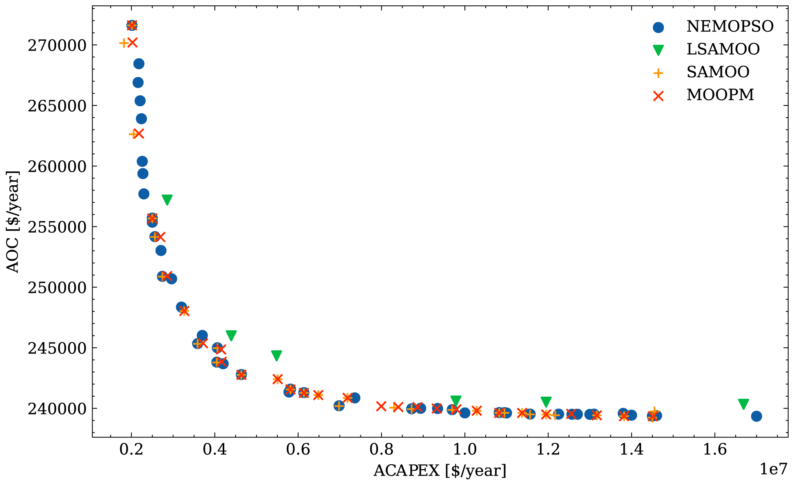

Distillation Column Optimization
Optimization Problem
\[
\begin{aligned}
\min_{NS,\,RR,\,FS}\quad & \left\{\, \text{ACAPEX},\;\; \text{AOC} \,\right\} \\[4pt]
\text{s.t.}\quad & MP \ge 0.9850 \\
& MR \ge 0.95 \\
& 20 < NS < 60 \\
& 1 < RR < 10 \\
& 2 < FS < 40 \\
& \text{Mass and energy balances (Aspen Plus)}
\end{aligned}
\]
\[
\text{ACAPEX} = \text{CAPEX}\times AF, \qquad
AF = \frac{j\,(j+1)^{n}}{(j+1)^{n}-1}, \qquad
\text{AOC} = C_{steam}\,Q_{reboiler} + C_{water}\,Q_{condenser}
\]
Variables
| Symbol | Description |
|---|---|
| \(NS\) | Number of stages (decision) |
| \(RR\) | Reflux ratio (decision) |
| \(FS\) | Feed stage (decision) |
| \(MP,\ MR\) | Methanol purity in distillate and methanol recovery |
| \(AF,\ j,\ n\) | Annualization factor, annual interest rate, plant life span |
| \(C_{steam},\ C_{water}\) | Cost factors of steam and cooling water |
| \(Q_{reboiler},\ Q_{condenser}\) | Reboiler heat duty and condenser heat removal |
Pareto Front

Source problem
Wolday, A.K., Ramteke, M. (2023). Optimisation of methanol distillation using GA and neural network hybrid. Materials and Manufacturing Processes, 38, 1911–1921. doi:10.1080/10426914.2023.2219306